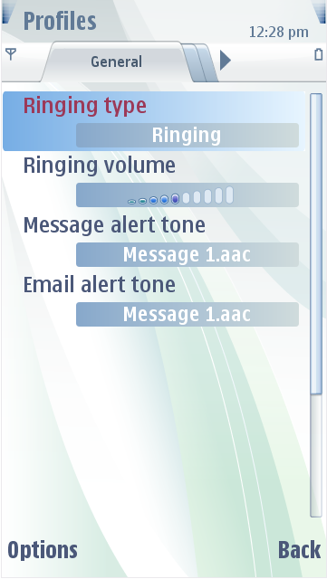
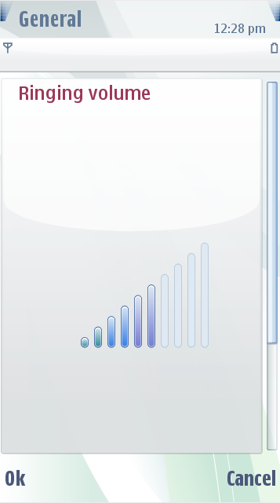

Settings
Settings items have two states:
The figure below illustrates the default list state and edit state.
 
Figure:
Default Settings
list (list state)
and an edited settings item (edit state)
In a list state, setting items are scrolled and the currently selected
option value is displayed below the item heading. You can alter the
appearance of the value item background. When a list item is opened for
editing, the main pane is displayed with only one settings item. Mobile
device users can edit the setting value once the item is opened.
Settings values may be edited through:
- Entering in a new item
- Entering time, date or code
values
- Selecting a value from a
list
- Modifying a generic slider
value
- Modifying a volume slider
The general background for the opened item is the general list
highlight.
Focused
list frame
The focused option item indication is used in two cases:
- As a background for the
selected option in the settings list
- As a highlight in the option
list
The item structure is the same as with highlights and pop-ups. The
parts used are:
- Four corner images
- Four sides images
- Center image
You can design the corner images individually. The sides are stretched
to fill the size of the area. The center becomes the maximum size of
the graphics area. When the item is used as a highlight, only prefixed
sections of the item are displayed.
Note:
You can also set effects
to settings items.
Unfocused
list frame
The unfocused list frame items are shown as a background for edited
settings. The background is displayed with:
- Option list
- Slider
- Volume
The item structure is the same as with highlights and pop-ups. The
parts are:
- Four corner images
- Four side images
- Center image
You can design the corner images individually. The sides are stretched
to fill the size of the area. The center becomes the maximum size of
the graphics area.
Note:
When the device contrast
is adjusted, an example image is displayed in the settings area.